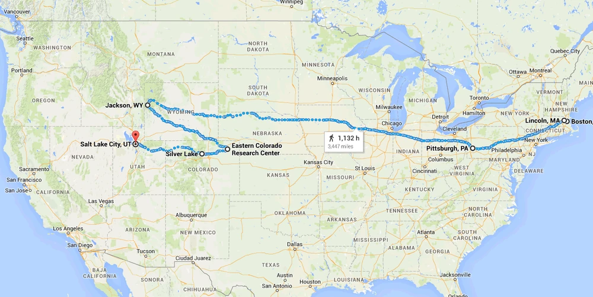
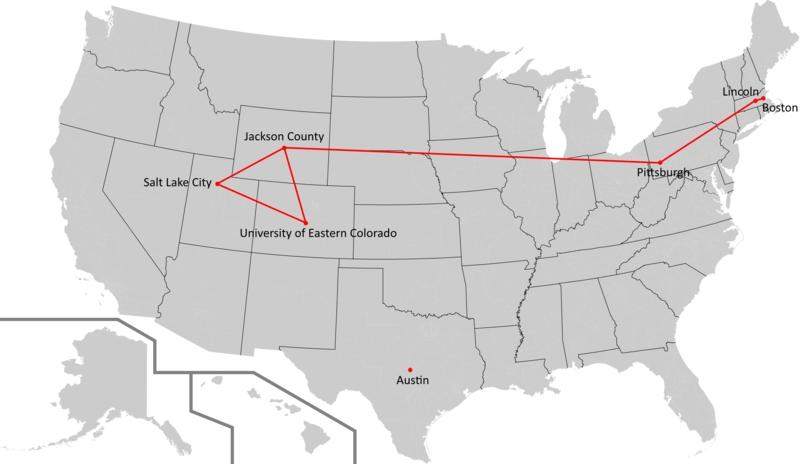

Пройденный путь
Согласно основному сюжету игры, Джоэлу и Элли понадобился год чтобы проделать путь от
Бостона до Солт-Лейк-Сити и обратно в округ Джексон. По большей части, всё расстояние они покрыли
пешком, иногда, по воле случая, используя транспортные средства — автомобиль и лошадь.
Общая длина всего пути составила примерно 5515 км (расчёт Google maps) и на то, чтобы проделать весь путь без остановки пешим ходом, им понадобилось бы 47 дней, когда как на машине на это ушло бы 57 часов, с учетом использования главных автострад и шоссе, находящиеся в целостном состоянии, без дорожного мусора и заторов.
Ниже приведен примерный маршрут по которому могли следовать Джоэл и Элли в своем путешествии по территории постапокалиптических Соединенных Штатов Америки.
Общая длина всего пути составила примерно 5515 км (расчёт Google maps) и на то, чтобы проделать весь путь без остановки пешим ходом, им понадобилось бы 47 дней, когда как на машине на это ушло бы 57 часов, с учетом использования главных автострад и шоссе, находящиеся в целостном состоянии, без дорожного мусора и заторов.
Ниже приведен примерный маршрут по которому могли следовать Джоэл и Элли в своем путешествии по территории постапокалиптических Соединенных Штатов Америки.

Примерный маршрут следования Элли и Джоэла в своем путешествии по территории США
Другой вариант маршрута с отмеченными точками, в которых происходили события игры